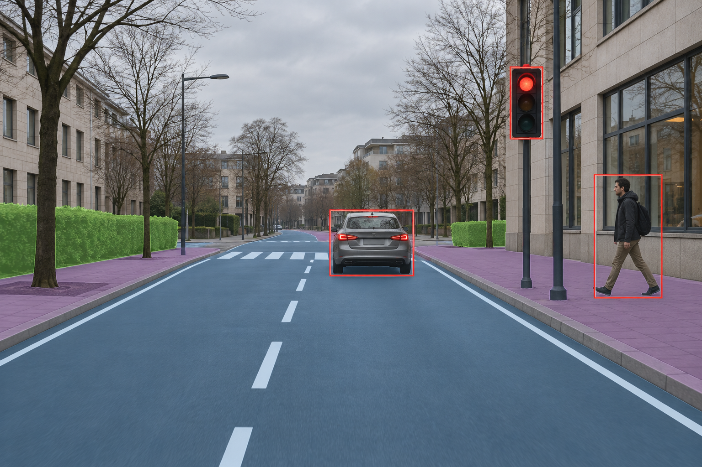

Explainable AI (XAI)
Making model behaviour, evidence, and uncertainty easier to inspect, communicate, and challenge.
Explore XAI →01 Intelligence that can explain and act
We work across explainable AI, computer vision, and embodied intelligence, with a specialization in Automated Driving Systems (ADS).
Our premise
Intelligent systems should be understandable, perceptive, and grounded in the world they affect. We connect XAI, computer vision, and embodied AI to study systems that can explain, perceive, and act.
Research map / 03 areas
Our work groups around explanation, visual perception, and embodied action. Automated Driving Systems are our application specialization.
Making model behaviour, evidence, and uncertainty easier to inspect, communicate, and challenge.
Explore XAI →
Visual perception for machines: scene understanding, object recognition, and reliable sensing in context.
See ADS specialization →
Systems that connect perception, reasoning, and action through robots, sensors, and physical environments.
Explore embodied systems →Application specialization / ADS
We bring perception, explainability, and embodied intelligence together in ADS research, where systems must interpret dynamic environments and act with reliability.
Field notes
Short observations, literature notes, and working hypotheses from the lab.
A starting point for our inquiry into interpretable decisions, accountable systems, and AI that operates in the physical world.
Our first literature and field notes will appear here as the lab develops.
The lab
Academy of Science is currently built and maintained by two contributors, with research notes shared as the lab develops.
Contributor
Contributor
academy_of_science independent AI research node
[ ok ] focus XAI · computer vision · embodied AI
[ ok ] applications medical · defence
Type help or select a command.